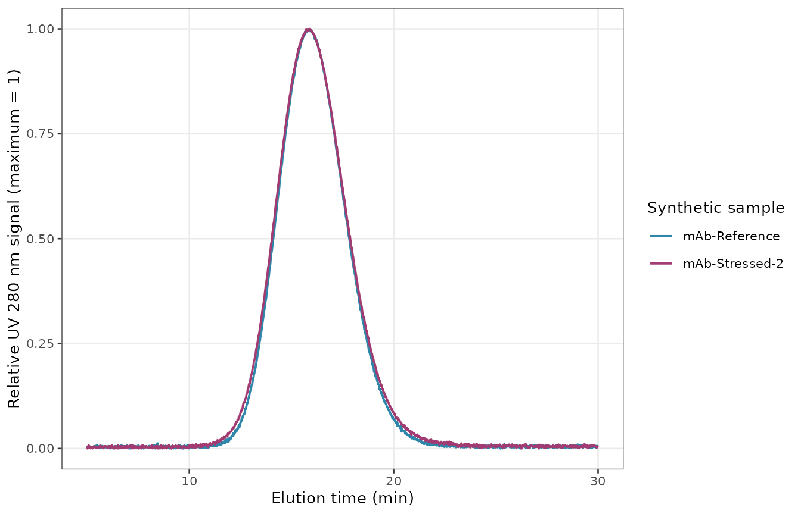
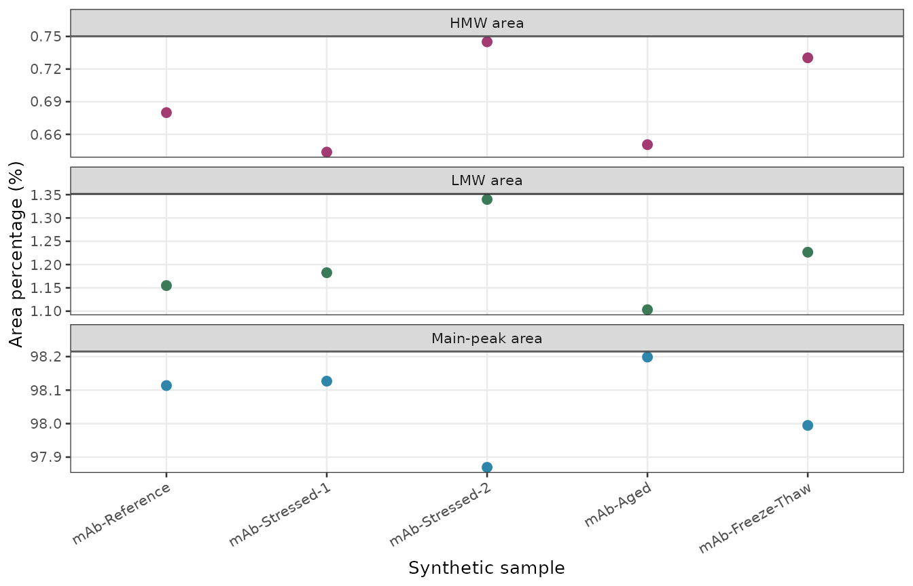

Scope
This vignette demonstrates area-based protein SEC summaries with
sec_protein, a synthetic dataset of
monoclonal-antibody-like chromatograms. The embedded component
percentages and nominal species sizes describe the dataset’s simulation.
They are not experimental measurements or acceptance criteria.
The dataset does not include protein calibration standards. Its nominal masses are approximately 600 kDa for HMW aggregates, 300 kDa for dimers, 150 kDa for monomer, and 50 kDa for fragments. These values are generation assumptions, not MW estimates recovered from the plotted signal. A polystyrene calibration curve should not be used to assign protein MW.
View the synthetic chromatograms
library(measure)
#> Loading required package: recipes
#> Loading required package: dplyr
#>
#> Attaching package: 'dplyr'
#> The following objects are masked from 'package:stats':
#>
#> filter, lag
#> The following objects are masked from 'package:base':
#>
#> intersect, setdiff, setequal, union
#>
#> Attaching package: 'recipes'
#> The following object is masked from 'package:stats':
#>
#> step
library(measure.sec)
library(recipes)
library(dplyr)
library(ggplot2)
library(tidyr)
data(sec_protein, package = "measure.sec")
chromatograms <- sec_protein |>
filter(sample_id %in% c("mAb-Reference", "mAb-Stressed-2")) |>
group_by(sample_id) |>
mutate(relative_uv = uv_280_signal / max(uv_280_signal, na.rm = TRUE)) |>
ungroup()
sample_metadata <- sec_protein |>
distinct(sample_id, description, monomer_pct, dimer_pct, hmw_pct, fragment_pct)
sample_metadata
#> # A tibble: 5 × 6
#> sample_id description monomer_pct dimer_pct hmw_pct fragment_pct
#> <chr> <chr> <dbl> <dbl> <dbl> <dbl>
#> 1 mAb-Reference Reference standard 98.5 1 0.3 0.2
#> 2 mAb-Stressed-1 Heat stress 40C 1wk 94 3.5 1.5 1
#> 3 mAb-Stressed-2 Heat stress 40C 2wk 88 6 4 2
#> 4 mAb-Aged 12 month stability 96 2.5 1 0.5
#> 5 mAb-Freeze-Thaw 5x freeze-thaw 95.5 2 2 0.5The chart scales each trace to its own maximum to compare peak positions and shapes. The normalized signal is not an estimate of species percentage.
ggplot(
chromatograms,
aes(x = elution_time, y = relative_uv, colour = sample_id)
) +
geom_line(linewidth = 0.65) +
scale_colour_manual(
values = c("mAb-Reference" = "#2E86AB", "mAb-Stressed-2" = "#A23B72")
) +
labs(
x = "Elution time (min)",
y = "Relative UV 280 nm signal (maximum = 1)",
colour = "Synthetic sample"
) +
theme_measure_sec()
Full-range synthetic UV 280 nm traces for the reference and heat-stressed samples, each divided by its own maximum signal. Both show one dominant broad peak near 16 minutes and low signal elsewhere; area-based percentages are calculated separately below.
Area-based aggregate summary
step_sec_aggregates() divides the baseline-corrected
signal into HMW, main-peak, and LMW regions. The boundaries are inferred
from the chromatogram unless explicit limits are supplied. This example
reports the step’s calculated area percentages for all five synthetic
samples.
rec_aggregates <- recipe(
uv_280_signal + elution_time ~ sample_id,
data = sec_protein
) |>
update_role(sample_id, new_role = "id") |>
step_measure_input_long(
uv_280_signal,
location = vars(elution_time),
col_name = "uv"
) |>
step_sec_baseline(measures = "uv") |>
step_sec_aggregates(
measures = "uv",
method = "tallest"
)
result_aggregates <- prep(rec_aggregates) |>
bake(new_data = NULL)
result_aggregates |>
select(sample_id, purity_hmws, purity_monomer, purity_lmws)
#> # A tibble: 5 × 4
#> sample_id purity_hmws purity_monomer purity_lmws
#> <chr> <dbl> <dbl> <dbl>
#> 1 mAb-Reference 0.681 98.1 1.15
#> 2 mAb-Stressed-1 0.646 98.1 1.18
#> 3 mAb-Stressed-2 0.748 97.9 1.34
#> 4 mAb-Aged 0.653 98.2 1.10
#> 5 mAb-Freeze-Thaw 0.733 98.0 1.22Protein summary with step_sec_protein()
With include_oligomer = FALSE, the step returns three
area partitions. The output is useful for reviewing the main-peak and
surrounding signal areas; it does not produce a calibrated
molecular-weight distribution.
rec_protein <- recipe(
uv_280_signal + elution_time ~ sample_id,
data = sec_protein
) |>
update_role(sample_id, new_role = "id") |>
step_measure_input_long(
uv_280_signal,
location = vars(elution_time),
col_name = "uv"
) |>
step_sec_protein(
measures = "uv",
type = "native",
baseline_method = "linear",
include_oligomer = FALSE
)
result_protein <- prep(rec_protein) |>
bake(new_data = NULL)
result_protein |>
select(sample_id, protein_hmws_pct, protein_monomer_pct, protein_lmws_pct)
#> # A tibble: 5 × 4
#> sample_id protein_hmws_pct protein_monomer_pct protein_lmws_pct
#> <chr> <dbl> <dbl> <dbl>
#> 1 mAb-Reference 0.680 98.1 1.15
#> 2 mAb-Stressed-1 0.644 98.1 1.18
#> 3 mAb-Stressed-2 0.745 97.9 1.34
#> 4 mAb-Aged 0.651 98.2 1.10
#> 5 mAb-Freeze-Thaw 0.730 98.0 1.23
protein_fraction_data <- result_protein |>
select(sample_id, protein_hmws_pct, protein_monomer_pct, protein_lmws_pct) |>
pivot_longer(
cols = starts_with("protein_"),
names_to = "region",
values_to = "percent"
) |>
mutate(
region = recode(
region,
protein_hmws_pct = "HMW area",
protein_monomer_pct = "Main-peak area",
protein_lmws_pct = "LMW area"
),
sample_id = factor(sample_id, levels = unique(sec_protein$sample_id))
)
ggplot(protein_fraction_data, aes(x = sample_id, y = percent)) +
geom_point(
aes(colour = region),
size = 2.2,
na.rm = TRUE
) +
facet_wrap(~region, ncol = 1, scales = "free_y") +
scale_colour_manual(
values = c(
"HMW area" = "#A23B72",
"Main-peak area" = "#2E86AB",
"LMW area" = "#3B7A57"
),
guide = "none"
) +
labs(
x = "Synthetic sample",
y = "Area percentage (%)"
) +
theme_measure_sec() +
theme(axis.text.x = element_text(angle = 30, hjust = 1))
HMW, main-peak, and LMW area percentages returned by
step_sec_protein() for each synthetic sample. Each panel
uses its own vertical scale to keep the smaller fractions legible.
The provided monomer_pct, dimer_pct,
hmw_pct, and fragment_pct columns are
simulation metadata. They are not outputs from the recipe above. Compare
them only when evaluating the synthetic example; keep the calculated
step results and the dataset’s supplied fields distinct.
Standards and mass assignment
The package’s sec_triple_detect example includes
polystyrene standards, not protein standards.
step_sec_conventional_cal() fits a polymer-specific curve;
its output should not be transferred to these protein traces. The
step_sec_protein() workflow above reports area regions and
does not supply a protein-standard MW calibration.
For a protein-specific MW estimate, use appropriate protein standards or a validated method with the calibration information required for that method. The examples here do not establish suitability or product specifications.
See also
- Getting started — basic SEC workflow
- System suitability — QC calculations and limits
- Multi-detector SEC — detector processing and limits
- Exporting results — tables and files
Session info
sessionInfo()
#> R version 4.6.2 (2026-10-29)
#> Platform: x86_64-pc-linux-gnu
#> Running under: Ubuntu 26.04.1 LTS
#>
#> Matrix products: default
#> BLAS: /usr/lib/x86_64-linux-gnu/openblas-pthread/libblas.so.3
#> LAPACK: /usr/lib/x86_64-linux-gnu/openblas-pthread/libopenblasp-r0.3.32.so; LAPACK version 3.12.0
#>
#> locale:
#> [1] LC_CTYPE=C.UTF-8 LC_NUMERIC=C LC_TIME=C.UTF-8
#> [4] LC_COLLATE=C.UTF-8 LC_MONETARY=C.UTF-8 LC_MESSAGES=C.UTF-8
#> [7] LC_PAPER=C.UTF-8 LC_NAME=C LC_ADDRESS=C
#> [10] LC_TELEPHONE=C LC_MEASUREMENT=C.UTF-8 LC_IDENTIFICATION=C
#>
#> time zone: UTC
#> tzcode source: system (glibc)
#>
#> attached base packages:
#> [1] stats graphics grDevices utils datasets methods base
#>
#> other attached packages:
#> [1] tidyr_1.3.2 ggplot2_4.0.4 measure.sec_0.0.0.9000
#> [4] measure_0.0.1.9004 recipes_1.4.0 dplyr_1.2.1
#>
#> loaded via a namespace (and not attached):
#> [1] gtable_0.3.6 xfun_0.62 bslib_0.12.0
#> [4] lattice_0.23-1 vctrs_0.7.3 tools_4.6.2
#> [7] generics_0.1.4 parallel_4.6.2 tibble_3.3.1
#> [10] pkgconfig_2.0.3 Matrix_1.7-6 data.table_1.18.6.1
#> [13] RColorBrewer_1.1-3 S7_0.2.2 desc_1.4.3
#> [16] lifecycle_1.0.5 compiler_4.6.2 farver_2.1.2
#> [19] textshaping_1.0.5 codetools_0.2-20 htmltools_0.5.9
#> [22] class_7.3-24 sass_0.4.10 yaml_2.3.12
#> [25] prodlim_2026.03.11 pillar_1.11.1 pkgdown_2.2.1
#> [28] jquerylib_0.1.4 MASS_7.3-66 cachem_1.1.0
#> [31] gower_1.0.2 rpart_4.1.27 parallelly_1.50.0
#> [34] lava_1.11 tidyselect_1.2.1 digest_0.6.39
#> [37] future_1.82.0 purrr_1.2.2 listenv_1.1.0
#> [40] labeling_0.4.3 splines_4.6.2 fastmap_1.2.0
#> [43] grid_4.6.2 cli_3.6.6 magrittr_2.0.5
#> [46] utf8_1.2.6 survival_3.8-12 future.apply_1.21.0
#> [49] withr_3.0.3 scales_1.4.0 lubridate_1.9.5
#> [52] timechange_0.4.0 rmarkdown_2.32 globals_0.20.0
#> [55] otel_0.3.0 nnet_7.3-21 timeDate_4052.112
#> [58] ragg_1.5.2 evaluate_1.0.5 knitr_1.52
#> [61] hardhat_1.4.3 rlang_1.3.0 Rcpp_1.1.2
#> [64] glue_1.8.1 ipred_0.9-16 jsonlite_2.0.0
#> [67] R6_2.6.1 systemfonts_1.3.3 fs_2.1.0